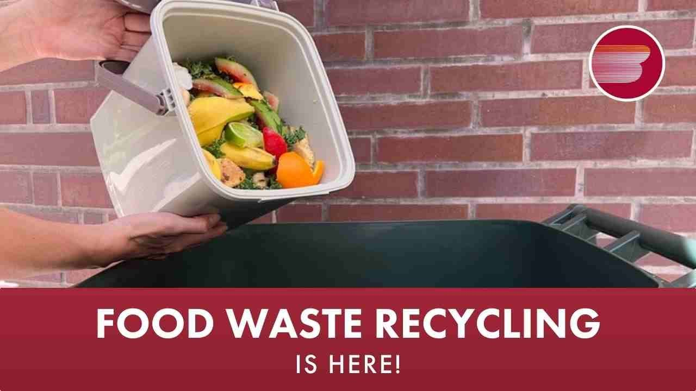
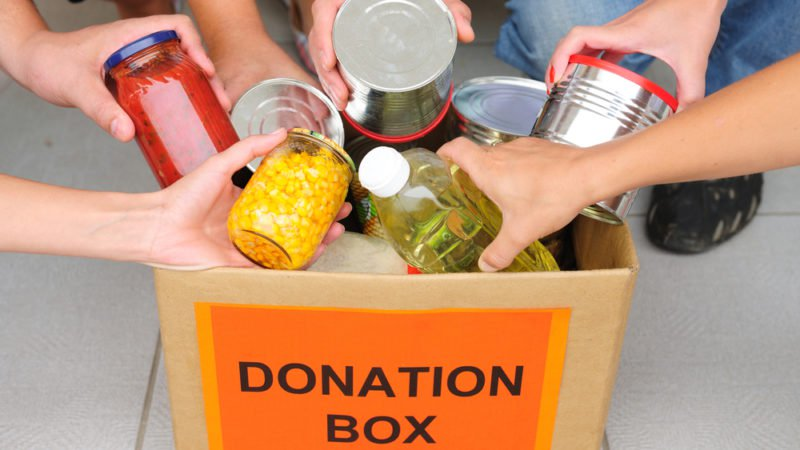
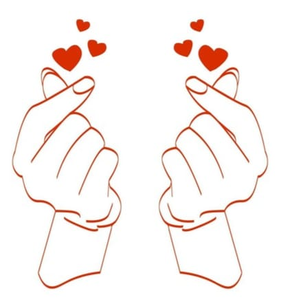
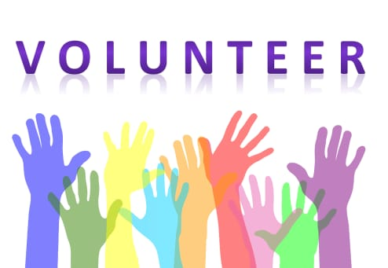

Food waste management is the process of handling and redirecting food that is no longer suitable for human consumption. The goal is to reduce the amount of food waste and its environmental and economic impact.
Food waste management involves avoiding food waste by planning menus, storing food properly, and buying only what you'll use
and recovering food for human consumption, animal feed, or industrial use composting organic waste or using food waste to create renewable energy
and landfilling or incinerating food waste.Food waste management can benefit the environment and your wallet. For example, you can save money by buying only what you'll use,
and you can claim tax benefits if you donate edible food.


With technology replacing the vast majority of the data collection process, managing waste is now a straightforward five-step process.
Food is thrown into the designated food waste bin.
The weight of the waste is logged from the scale under the bin, and the food type is captured on camera.
This process is repeated over the course of the day and has the capability to include cooking errors, overproduction, trimmings, and plate waste.
The data is sent to the cloud where it is aggregated, it includes the financial and environmental costs of the wasted food, time of day, and areas in production of high waste. Chefs can view the waste the next day.
With this insight available in an actionable format, the chefs can now make operational decisions in the kitchen to reduce waste.

It's not how much we give but how much love we put into giving.So what are you waiting for!Click on the donate button to make a smile on the face of the helpless ones.

You are welcome volunteering. We are grateful for your willingness to give your time, energy, and talents. Your support will encourage us to continue fulfilling our mission and serve people in our community.